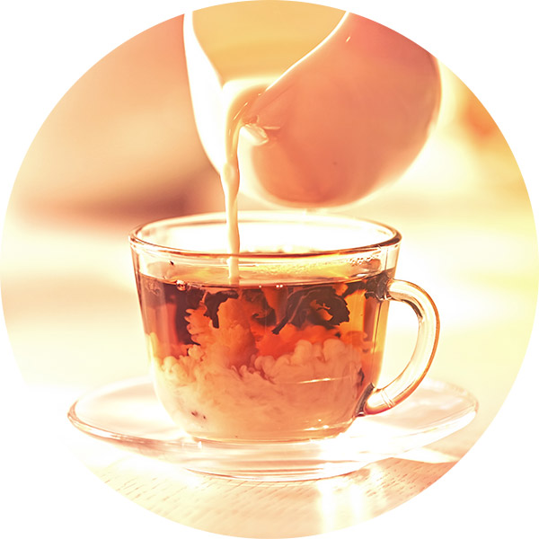

Flipping 1 coin [ Prob(Heads) = 0.5 ] ...
T
Number of Heads: 0 [Proportion Heads: 0]3-Course Dinner
or
Thanksgiving Feast?
Putting the pieces together
in a modern Math/Stat sequence
Randall Pruim
cutt.ly/jsm2022-pruim-slides
Slides and Questions
Slides at
https://cutt.ly/jsm2022-pruim-slides
Comments/Questions at
Some Background
Calvin University
- Liberal arts university with ~3000 undergraduate students
- (Relatively) large core curriculum, small majors
- Statistics major \(\approx 24 s + 16 m + 12 c\) hours

Some Background
Prob/Stats sequence at Calvin
Taken by students from many programs
Some of these students have not had statistics before
The first time I taught our prob/stat sequence (in 2005)
Just under half of students took the second course
Most were more interested in statistics than in probability
But the course I inherited was basically all probability in the first semester
About the Title
3-course dinner
- Mathematics (Probability); Statistics (Data); Computation

About the Title
Thanksgiving Dinner
Adjusting from a Traditional Sequence to an Integrated Approach
Some examples from my courses (over 15+ years now)
Some thoughts on the value of making the shift
Some tips/recommendations for making the shift
1st Adjustment: Statistics Early
- Lead with Lady Tasting Tea (or similar) on Day 1.
- Any situation with \(H_0: \pi = 0.5\) will do.
1st Adjustment: Statistics Early
- Jargon-free discussion: How should we test the Lady’s claim?
1st Adjustment: Statistics Early
Jargon-free discussion: How should we test the Lady’s claim?
- Binomial distribution \(\to\) coin tosses
- Null hypothesis \(\to\) random guesser
- Test statistic \(\to\) score (how many correct “guesses”)
- Rejection region \(\to\) minimum score to “pass the test”
- P-value \(\to\) how likely to obtain score just by guessing
1st Adjustment: Statistics Early
Jargon-free discussion: How should we test the Lady’s claim?
Bring a coin to simulate the null distribution (tedious!)
- Have each student write down a sequences of H/T and compare to the coin toss outcomes
2nd Adjustment: Computation Early
Flipping coins is tedious. Let’s automate.
2nd Adjustment: Computation Early
Now let’s do that a lot of times…
How unusual would it be for a random guesser to correctly identify 18 cups out of 20?
The Role(s) of Computation
- introduce concepts/ideas
- emphasize big ideas
- confirm (or alter) intuition
- support applications
Note: In my classes I end up having to clarify when I’m not looking for a purely computational (simulation) solution to a probability problem. For many of my students, simulations become their go-to method for answering probability questions.
Adjustment #3: Role of Probability
Probability then Statistics \(\rightarrow\) Probability FOR Statistics
Include basics of inference in first semester (tests, intervals, power, simulation-based methods).
Use statistical goals to motivate learning probability.
Lady Tasting Tea
\(\rightarrow\) Binomial distributions
\(\rightarrow\) Binomial Test (and Normal approximation)
\(\rightarrow\) Power
Probability For Statistics
Dennis Sun (JSM 2020) has an even better name for this:
Or perhaps even better:
- Triple Immersion in Probability, Statistics, and Computation
Continuing our Example: Power
Suppose the Lady can correctly distinguish the mixing order 80% of the time,
- How likely is she to pass our test (get \(\ge\) 18 of 20 correct)?
Can come back later and work out power using binomial (or normal) distributions if we like.
Power: Generalizing
Fill in the blanks:
If the Lady can correctly distinguish the mixing order ____ % of the time, how likely is she to pass our test?
(pass = get \(\ge\) ____ of ____ correct)
Easy enough to modify our code above for any particular case,
but there is a better way…
Power via Functions
- Use existing code as template.
Power via Functions
- Use existing code as template.
- Identify which values could be changed.
Power via Functions
- Use existing code as template.
- Identify which values could be changed and make them function arguments.
Power via Functions
power <- function(
null = 0.5, alt = 0.8, n = 20, threshold = 18, reps = 5000)
{
Null <- do(reps) * rflip(n, null)
Alt <- do(reps) * rflip(n, alt)
labs <- paste(100 * c(null, alt), "%")
gf_freqpoly(~ heads, binwidth = 1, data = Null, color = ~ labs[1]) |>
gf_freqpoly(~ heads, binwidth = 1, data = Alt, color = ~ labs[2])|>
gf_vline( xintercept = ~ threshold, color = "gray50", size = 2) |>
gf_labs(color = "p(correct)")
}Power via Functions
power <- function(
null = 0.5, alt = 0.8, n = 20, threshold = 18, reps = 5000)
{
Null <- do(reps) * rflip(n, null)
Alt <- do(reps) * rflip(n, alt)
typeI <- prop( ~ (heads >= threshold), data = Null)
power <- prop( ~ (heads >= threshold), data = Alt)
c(typeI, power) |> setNames(c('type I', 'power'))
}
power(null = 0.5, alt = 0.8, n = 20, threshold = 18) type I power
0.0006 0.2058 Power: Experimenting
type I power
0.0026 0.8224 type I power
0.0004 0.6770 type I power
0.0000 0.6766 Leads to more questions:
- How precise are these answers? (0? 0.0000 vs 0.0004?)
- How many replications should we use?
- Can we avoid using simulations? Are there advantages?
Power via Functions
The ability to turn one-offs into reusable functions is a key skill for students to develop.
Helps them understand how R works
Also helps them think through 2 important questions
- What do I want the computer to do for me?
- What does it need to know to do that?
More reproducible; faster exploration
Computation in Prob/Stats sequence
These days the use of computation in a statistics class is not so controversial.
Allows us to use larger, more interesting data sets
Allows us to focus attention on the right parts of the task
Allows us to teach reproducible analysis methods (e.g., RMarkdown/Quarto, scripting, functions, packages)
Computation (and statistics) can also support learning probability.
Poisson and Exponential
We can use the connection between the two distributions
to help students shake a common misunderstanding of the Poisson rate parameter \(\lambda\).
vs.
Poisson Exercise
After a 2010 NHL play-off win in which Detroit Red Wings wingman Henrik Zetterberg scored two goals in a 3-0 win over the Phoenix Coyotes, Detroit coach Mike Babcock said, ``He’s been real good at playoff time each and every year. He seems to score at a higher rate.”
Do the data support this claim? In \(506\) regular season games, Zetterberg scored \(206\) goals. In \(89\) postseason games, he scored \(44\) goals. Goal scoring can be modeled as a Poisson random process. Assuming a goal-scoring rate of \(\frac{206}{506}\) goals per game, what is the probability of Zetterberg scoring \(44\) or more goals in \(89\) games?
How does this probability relate to Coach Babcock’s claim?
- What about multiple comparisons/players?
- Isn’t 206/506 also just an estimate?
Stat 344: First Exam Problem
Problem 1 <Details omitted>
- What is the maximum likelihood estimate for \(\theta\)?
- If we test the null hypothesis that \(\theta = 2.5\), what is the p-value?
- What is the 95% likelihood confidence interval for \(\theta\)?
Could start several ways
- Provide (log) likelihood function.
- Provide data and model.
- Could require numerical or analytical approaches.
But some of my students were getting lost in the details (logs, derivatives, numerical optimizers, etc.), so …
Stat 344: First Exam Problem
Below is a graph of a log likelihood function \(l(\theta)\) for a data set with \(n = 23\).
Using the information provided, answer the following questions as accurately as you can.
- What is the maximum likelihood estimate for \(\theta\)?
- If we test the null hypothesis that \(\theta = 2.5\), what is the p-value?
- What is the 95% likelihood confidence interval for \(\theta\)?
Visualizing Likelihood
maxLik + fastR2 make it easy to visualize likelihood (for one parameter).
More examples
- Golfballs in the Yard \(\to\) Test Stats/Null Distributions/GOF
- How many replicates do I need (to estimate a p-value)?
- Robustness: Is the coverage rate in my simulation consistent with nominal value?
- If two iid samples of size \(n\) are drawn from the same normal distribution, what is the probability that the mean of the second sample will lie in the 95% CI produced by the first sample?
Summary
- Take advantage of the interplay between probability, statistics, and computation.
Take all those good ideas from Intro Stats and adapt them for Probability & Math Stats.
- (Hint: Sometimes adapt = use without modification.)
Choose a toolkit with high bang/buck:
- “Less volume, more creativity.”
- Keep looking for new things – or write them!
Thanks!
Slides at
https://cutt.ly/jsm2022-pruim-slides
Comments/Questions at